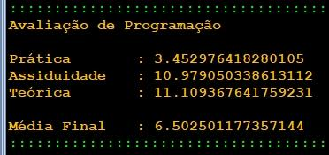

| Exercício | Dificuldade | Pontos | Data limite | Créditos |
| Ficha03_038
|
Normal |
4.0 |
04/10/2022 12:00:00 |
(c)M@nso 2021 |
Média Final de Programação
Pretende-se construir um programa que permita fazer a avaliação da disciplina de Programação.
A disciplina é composta pelos seguintes componentes:
- Prática - 60%
- Assiduidade - 10%
- Teórica - 30%
Construa um algoritmo que permita gerar de forma aleatória as três componentes da avaliação, no intervalo [0.0, 20.0[ , e apresentar a nota final.

| Input |
Output |
|
Avaliação de Programação
Prática : 14.617563814065818
Assiduidade : 8.201616229844033
Teórica : 4.154296826194342
Média Final : 10.836988959282197 |
Algorithmi 22.05 Student version
(c) Antonio M@nso 2022
Instituto Politécnico de Tomar - All rights reserved